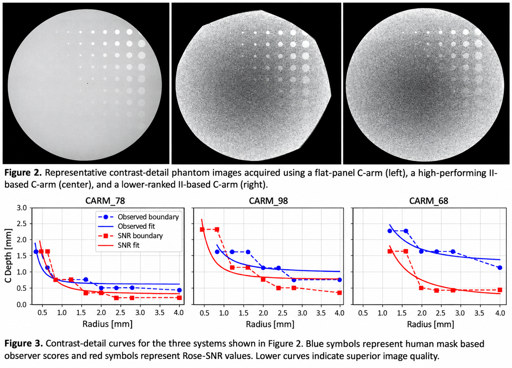

Mobile C-Arm Image Quality
Research
Evaluated image quality across 11 mobile C-Arm systems using contrast-detail phantom imaging, human observer assessment, and quantitative image analysis.
Methods: Contrast-detail analysis · Observer studies · Rose-SNR · Image processing · Statistical comparison
